[N-World Contents] [Book Contents] [Prev] [Next] [Index]
Creating & Using Materials
A material is a collection of attributes that can be assigned to an object and which determine its surface appearance. This chapter describes how to use the Attributes Editor, N·World's an easy-to-use graphical interface for defining materials. It also describes how to apply the material to an object and render the object.
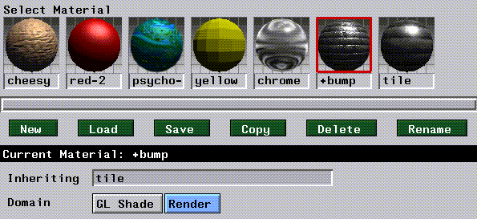
Mini-Tutorial 1: Creating and Using Materials
This chapter contains a mini-tutorial illustrating the procedure for creating, applying, and modifying materials. We'll walk you through the procedure, step-by-step, for creating a your own material and assigning it to an object. You'll learn to:
For this example, we'll use the default lights in N-Geometry to light the scene; we discuss adding other lights to materials in a later chapter.
Creating an Object
1. (CLICK-L) on New Object>Sphere in the GeoMenus.
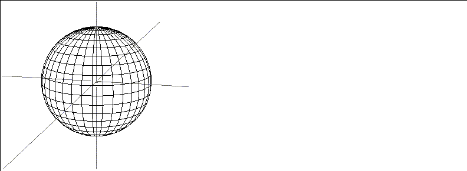
Figure 2.1 Creating an object
Shading the Object
In order to see the assigned attributes for an object, you need to display it in shaded mode. You can display some or all of the objects in a scene in shaded mode.
2. (CLICK-L) on objects in the element sensitivity menu.
3. (SHIFT-L) on the sphere.
4. (CLICK-L) on Shading.
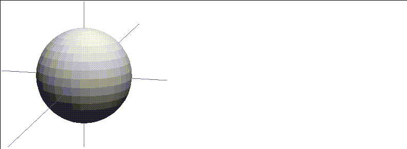
Figure 2.2 Shade the object
Creating a New Material
We're now ready to create a new material. You define materials in the Attributes Editor. To open the Attributes Editor:
5. (CLICK-L) on the green Attributes button at the bottom of the screen.
- The Attributes Editor opens, as shown in Figure 2.3.
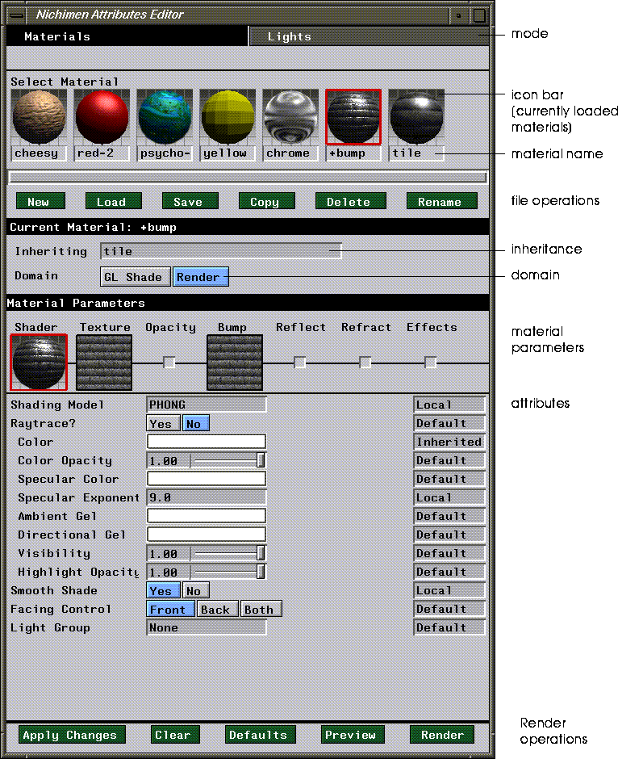
Figure 2.3 The Attributes Editor window (shown with some preset materials loaded)
6. (CLICK-L) on the Materials button at the top of the screen to make sure you're in Materials mode.
7. (CLICK-L) on the GL Shade button.
- We only want to view this object in the N-Geometry window for now, so we only have to define the GL Shade attributes.
8. (CLICK-L) on New.
- Enter a directory and name for the material in the dialog box that appears, then (CLICK-L) on Do It:
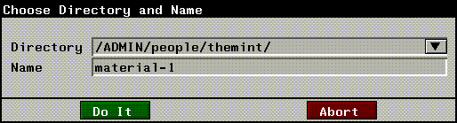
Figure 2.4 Creating a material
A new icon appears in the material icon area across the top of the Attributes Editor; the red rectangle around the icon indicates that it is the currently selected material.
Assigning a Material to an Object
The next step is to assign the material to the object. You associate a material with an object thought Browser.
9. (CLICK-L) on the configuration bar across the bottom of the screen to open the Browser.
- Your display should look something like this:
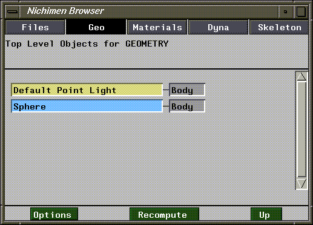
Figure 2.5 Object hierarchy as displayed in the Browser
10. (CLICK-R) on the Sphere field in the Browser.
- The following menu appears:
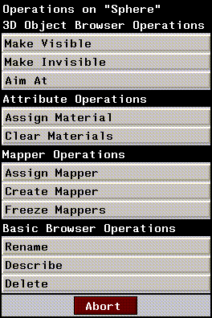
Figure 2.6 Menu of object operations in the Browser
11. (CLICK-L) on Assign Material.
- A list of currently loaded materials is displayed:
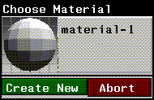
Figure 2.7 Selecting a material to assign to an object
- In this case, we've created only one material, called material-1.
12. (CLICK-L) on the material-1 icon.
- Now, if you look at the Browser, you'll see that there's an inverted triangle in the Sphere field. This indicates that there is additional information about the Sphere object that can be displayed.
13. (CLICK-L) on the inverted triangle.
- The hierarchy opens up to show you that the material has been assigned:
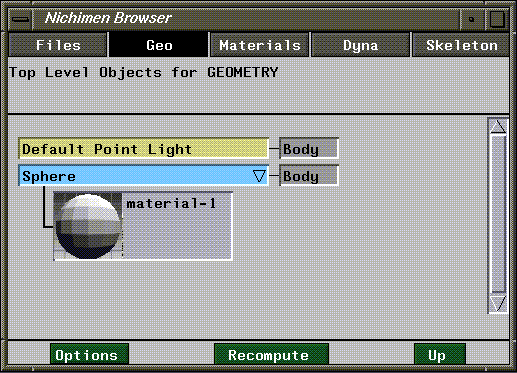
Figure 2.8 Looking at material assignment through the Browser
- That's all there is to assigning a material to an object (or a part). Now we'll go back to the Attributes Editor and modify the material and watch the changes interactively in the N-Geometry window.
Modifying a Material
Back In the Attributes Editor take a closer look at the middle portion of the window. Under the Material Parameters bar, there are two slots:
Just as the current material is outlined in red, so is the current area of the material for which you are defining parameters. We'll work with textures in a little bit; for now, (CLICK-L) on Shader.
14. (CLICK-L) on the Diffuse Color color bar.
- A palette appears:
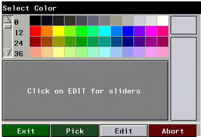
Figure 2.9 Selecting a color
15. (CLICK-L) on a red.
- The diffuse color for the material is updated, as is the Shader icon:
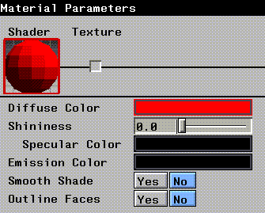
Figure 2.10 Updated Diffuse Color and Shader icon
16. (CLICK-L) on the Redisplay button at the bottom of the Attributes Editor window.
- The scene in the N-Geometry window is redisplayed, showing any objects that have been updated.
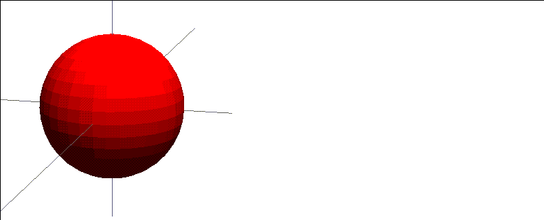
Figure 2.11 Updated material applied to sphere
Now let's make some other changes to the material and see how they affect the object's appearance.
17. (CLICK-L) on the Yes button next to Smooth Shade.
- The object is displayed using vertex rather than face normals, which produces a smooth (non-faceted) appearance:
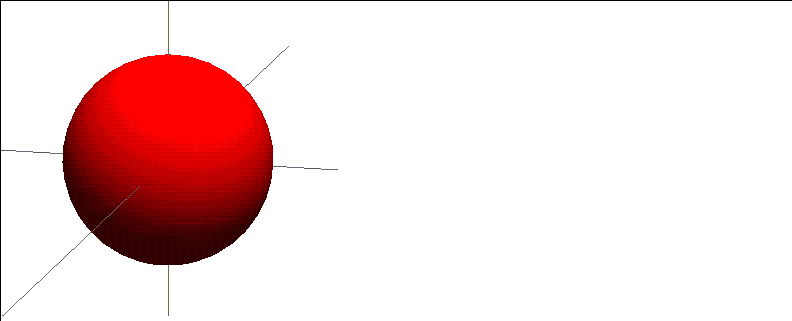
Figure 2.12 Smooth Shading turned on
18. (CLICK-L) on the Specular Color field and choose a dark blue.
- The specular color is the reflected "highlight" you see on surface of an object.
19. (DRAG-L) on the Shininess slider toward the center of the range, then (CLICK-L) on Redisplay.
- Note that increasing the "shininess" value makes the specular smaller, which simulates a "shinier" surface.
20. (CLICK-L) on Yes next to Outline Faces, then (CLICK-L) on Redisplay.
- The faces are outlined on the object:
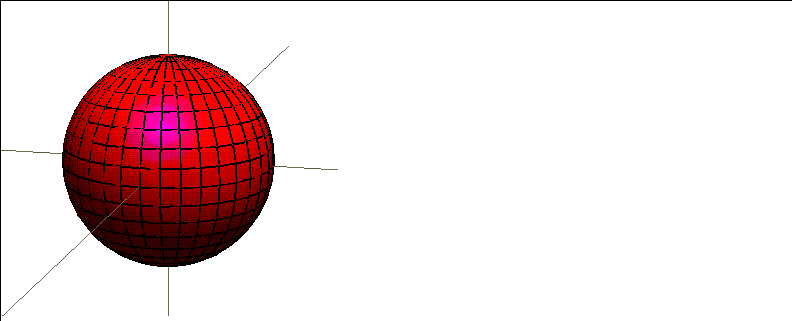
Figure 2.13 Outline faces turned on
One of the biggest advantages of working with a GL Shade material is that you can apply it to an object and still model with a shaded object. Modeling with Outline Faces turned on makes it easy to see which faces you're working on!
Try this:
21. (CLICK-L) on points in the element sensitivity menu in the N-Geometry window.
22. (SHIFT-L) on a point on the sphere.
23. (CLICK-L) on Move.
- Move the point around. The object is updated interactively as you model.
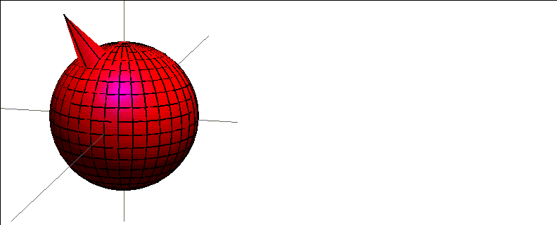
Figure 2.14 Modeling with GL Shading turned on
24. (CLICK-L) on Emission Color and select a medium blue.
- The emission color defines the darkest possible color for the surface of the object. If you use black (the default) the object can be any color. The lighter the color you specify, the lighter the overall object will appear:
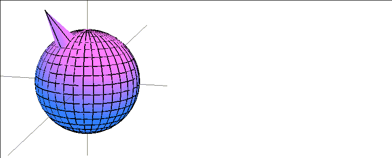
Figure 2.15 Changing the Emission Color
Whenever you modify an attribute, the attributes editor display is updated to indicate that the material has been changed:
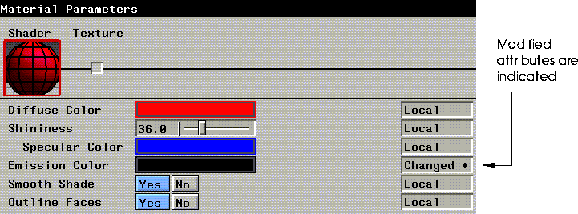
Figure 2.16 Changed attributes are marked "Changed*"
Saving a Material
Let's save the material before we continue:
25. (CLICK-L) on the Save button.
- A dialog box displaying any loaded materials is displayed:
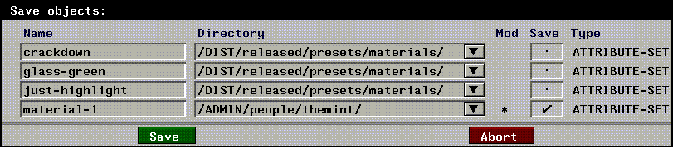
Figure 2.17 Saving a material
New materials, or materials that have been modified but not saved to disk are marked with an asterisk ("*") in the Mod column.
26. (CLICK-L) on the Save checkbox for any material you want to save.
- By default, any modified material is checked.
27. (CLICK-L) on Save.
Adding a Texture Map
Now that you've created a basic material, lets add a texture map. Texture mapping is the projection of an image onto the surface of an object through a special type of object called a mapper.
Rather than changing our original material, let's make a copy and work with that:
28. (CLICK-L) on the icon for the material you want to copy.
- This makes the material the current material.
29. (CLICK-L) on the Copy button.
30. Enter the directory and name of the new material in the dialog box that appears.
A new icon appears in the row of icons at the top of the Attributes Editor. The name of the currently selected material is also displayed on the "Current Material:" black bar:
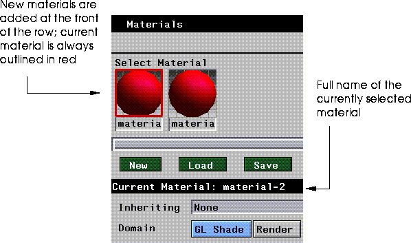
Figure 2.18 Determining which material is currently selected
31. (CLICK-L) on the Texture box in the Material Parameters section of the Attributes Editor.
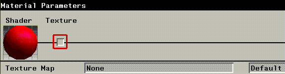
Figure 2.19 (CLICK-L) on the texture box
32. (CLICK-R) on the texture map field.
- A dialog box appears:
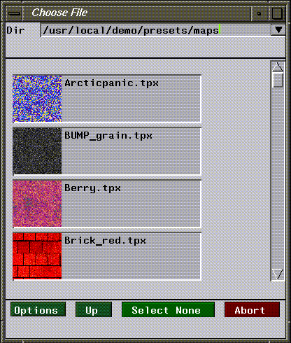
Figure 2.20 A directory of texture maps
33. Make sure the following directory is in the top of the dialog box:
/usr/local/ngc/presets/maps
34. Use the scroll bar to scroll up and down to look at the different textures, then (CLICK-L) on the icon for the texture you want to use.
- We'll use tile-C.tpx for this example.
The selected texture map is added to the material; the icon for the texture map is displayed in the Texture material parameters slot, and the Shader icon is updated:
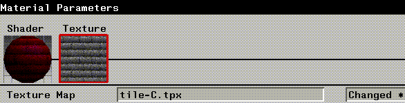
Figure 2.21 The selected texture appears in the material parameters section
35. (CLICK-L) on Redisplay.
- Nothing happens! That's because when you project any type of map onto the surface of an object, you must create a mapper through which to project it. A mapper is a special object that determines the relationship between the selected map and the surface of the object.
Creating a Mapper
To create a mapper, you need to use the Browser:
36. (CLICK-L) on the Browser button on the configuration bar.
37. (CLICK-R) on the Sphere node.
38. (CLICK-L) on Create Mapper.
- The following dialog box is displayed:
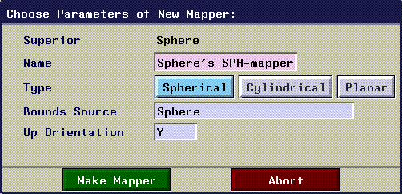
Figure 2.22 Creating a mapper
39. (CLICK-L) on the Spherical button, then (CLICK-L) on Make Mapper.
If you look at the Browser now, you can see that a Sphere group has been created, which includes both the sphere object and the spherical mapper you just created:
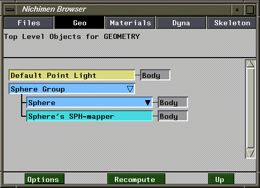
Figure 2.23 New hierarchy
To specify which mapper the map is applied through:
40. (CLICK-R) on the Sphere node.
41. (CLICK-L) on Assign Material.
- Select your new material from the list that appears. Because our new material contains a map, you must tell N-Geometry which mapper to apply it through. A dialog box appears to let you select a mapper:
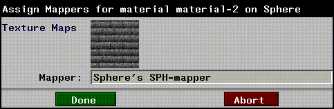
Figure 2.24 Selecting a mapper
- Because we only have one mapper for our sphere, it's automatically entered in the Mapper field.
42. (CLICK-L) on Done.
The map is now assigned through a mapper, and the scene in N-Geometry is automatically updated:
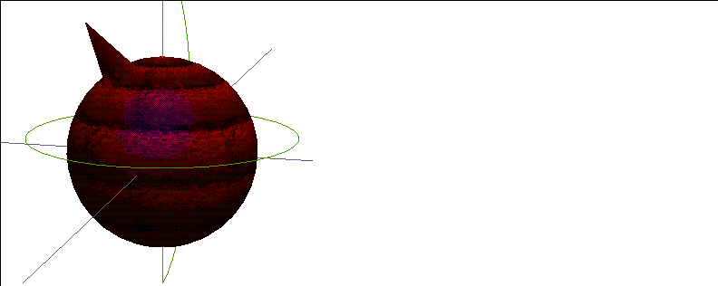
Figure 2.25 Creating a mapper
Note that any attributes you specified under the Shader section interact with those defined in the Texture section.
43. (CLICK-L) on the Shader icon and change the set the Diffuse and Specular color to white, and the Emission Color to black.
44. (CLICK-L) on Redisplay to see the texture with no other color mixed in.
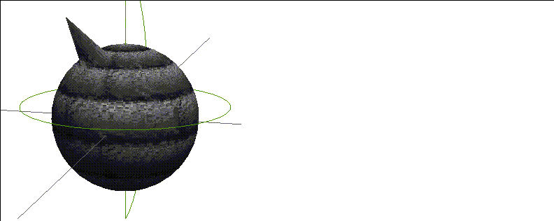
Figure 2.26 Mapper applied with no diffuse, specular, or emission color
Copying Attributes between Domains
Both of the materials we created so far have been for use in the GL Shade domain. However, a single material can contain attributes for all available render domains. Let's copy the material we just created from the GL Shade domain to the Render domain and render the object using N-Render.
To copy attribute values from the Render domain to the GL Shade domain:
1. (CLICK-L) on the icon for the material whose attributes you want to translate from one domain to another.
2. (CLICK-R) on a domain button.
- A menu appears, from which you select the source domain and the target domain:
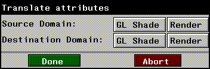
Figure 2.27 Translate attributes dialog box
3. In the top row, (CLICK-L) on the "from" (source) domain.
- In our case, we're translating from GL Shade, so (CLICK-L) on the GL Shade button.
4. In the bottom row, (CLICK-L) on the "to" (destination) domain.
- We want to translate the GL Shade attributes to Render attributes, so (CLICK-L) on Render.
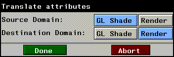
Figure 2.28 Select a source and a destination domain
5. (CLICK-L) on Done.
6. (CLICK-L) on the Render domain button.
- This switches to the render domain.
7. (CLICK-L) on the Texture icon.
- Note that all the attributes that were defined for the GL Shade attribute have been translated to the Render domain. Additional attributes in a more robust domain are left at their default values, but can be modified and saved as part of the current material.
8. (CLICK-L) on the Render button at the bottom of the Attributes Editor to render the scene.
- The results of the render are displayed in the Nichimen Render Display window.
- Note: Only attributes which are supported in both domains are copied between domains. In other words, texture map data will be copied between the GL Shade and Render domains, but attributes unique a given domain are not copied to a domain that does not support that attribute.
Loading Materials
Once you've saved a material to file, you can read it back in at any time. A library of preset materials can be found in the following directory:
/usr/local/ngc/presets/materials
To load saved materials (including the preset materials) into the Attributes Editor:
1. (CLICK-L) on Load.
- A standard N·World Choose Directory menu appears. (This menu is described in more detail in the Getting Started manual.)
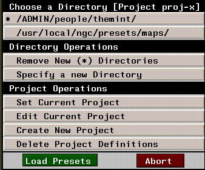
Figure 2.29 Choose Directory
2. (CLICK-L) on Specify a New Directory.
- Enter the name of the directory you want to load materials from. If you've already loaded materials from the directory in the current session, or if the directory is part of the current project, the directory will appear at the top of the directory list.
- Material files have the filename extension .attr. Once you've selected a directory, a pop-up menu appears listing the files in that directory which have the appropriate extension:
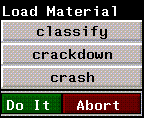
Figure 2.30 Selecting materials to load
3. (CLICK-L) on any materials you want to load:
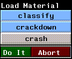
Figure 2.31 (CLICK-L) on each material you want to load
4. (CLICK-L) on Do It.
- The selected materials are loaded and their icons (if they exist) are displayed on the icon bar at the top of the Attributes Editor:
- Note. If you load a material which inherits from another material, then both materials are loaded.
Other Operations on Materials
The row of green buttons beneath the icon bar are used to perform file operations on materials: creating, loading, saving, copying, deleting, and renaming. We've already discussed creating, saving, and loading in the previous pages; the rest of the commands are described below:
Copying Materials
To make a distinct copy of a material already loaded in memory:
1. (CLICK-L) on the icon for the material you want to copy (making the material the "current" material).
2. (CLICK-L) on Copy.
- Enter the directory and name for the new material in the dialog box that appears:
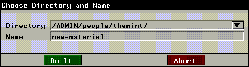
Figure 2.32 Making a copy of a material already in memory
3. (CLICK-L) on Do It.
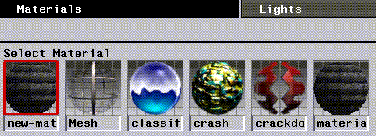
Figure 2.33 The icon for the copied material is inserted at the beginning of the icon bar and is automatically selected as the current material
Deleting Materials
To delete one or more materials from memory:
1. (CLICK-L) on Delete to delete a material from memory.
- Highlight any of the materials that you want to delete from the pop-up that appears, then (CLICK-L) on Do It.
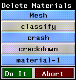
Figure 2.34 Delete Material pop-up menu
- Note. Delete materials from disk using the Browser or from a UNIX shell.
Renaming Materials
To rename a material:
1. (CLICK-L) on the Rename button.
- A menu of currently loaded materials (including pathnames) is displayed:
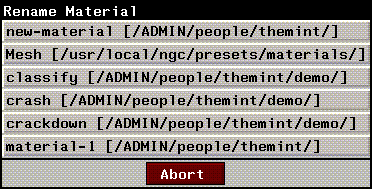
Figure 2.35 Rename material pop-up menu
2. (CLICK-L) on the material you want to rename.
- Enter a new name and, if desired, a new path for the material.
3. (CLICK-L) on Do It.
How Attributes are Grouped
Most render domains support a large number of attributes. To make things manageable, these attributes are broken into different related groups. You select the group of attributes that you want to change by selecting the appropriate icon in the middle of the Attributes Editor
These parameters appear as icons in the Material Parameters section of the Attributes Editor window:
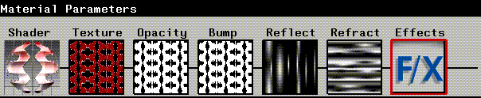
Figure 2.36 The material parameters menu
Parameters are in turn comprised of a set of attributes; they serve as a convenient way of grouping related attributes in the Attributes Editor menu. Some parameters are not available for all render domains.
(CLICK-L) on an icon to edit the attributes associated with that aspect of the material.
Shader
Shader parameters define the behavior of the shader for the currently selected domain. The Shader attributes control the "basic" appearance of the object (non-map related attributes).
Texture
Specify a texture map and texture map options. Texture maps laminate an image onto an object or face part.
Opacity
Render domain only
Specify an opacity map and map options. Opacity maps control the opacity of an object or face part.
Bump
Render domain only
Specify a bump map and map options. A bump map is a black and white image that is used in conjunction with a texture map to produce a textured, 3D appearance on a smooth surface. Bump maps can be a quick and simple way of applying 3D texture to your objects without adding or modifying geometry (which increases render time).
Reflection
Render domain only
Specify a reflection map and map options. Reflection maps are images mapped onto objects in such a way that they appear to be reflected from the object.
Refraction
Render domain only
Refraction maps map a scene onto an object in such a way that it appears to be refracted from the interior of the object.
Using Attributes
Each render domain contains a suite of attributes whose values determine how objects rendered with a given material will look. Attributes are displayed in the bottom half of the Attributes Editor. You (CLICK-L) on the appropriate icon to edit attributes associated with that icon. For example, to change the basic appearance of an object, (CLICK-L) on the Shader icon; to change the texture mapping attributes, (CLICK-L) on Texture, and so on.
Not all icons are available for all domains; for example, only the Render domain supports Reflection and Refraction mapping, so these icons will never appear if you select a domain other than Render. The attributes in a given section also vary from domain to domain-for example, Shader attributes that can be specified for a game domain are tailored for that machine, and differ from those that can be specified in a more generic domain such as GL Shade.
Attribute Fields
You modify attributes by editing their values in each attribute field. Attribute fields have three primary components:
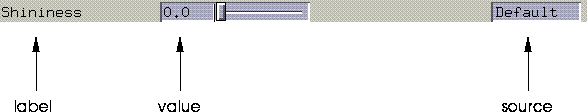
Figure 2.37 An Attribute field
Render Operations
These commands, located on buttons along the bottom of the Attributes Editor window, allow you to:
The commands that appear at the bottom of the Attributes Editor depend on which domain you are in; the domains to which each command applies is noted in the sections below.
Revert
All domains
You can use the Revert command to reload the last saved version of a material, or to clear any changes that have been made to a material in memory:
Preview
Render domain only
Preview applies the current material to the sphere for the material icon. The material icon is shown on the icon bar and in the Shader parameters slot in the Material Parameters section of the menu.
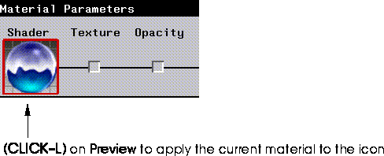
Figure 2.38 Previewing a material
Whenever you change a Render attribute, a red "X" appears over its icon; the red "X" tells you that while the changes may have been saved with the material, the icon (which must be rendered like any other object!) has not been updated.
(CLICK-L) on Preview to update the icon for the material.
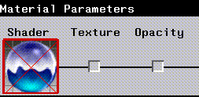
Figure 2.39 A large red "X" appears over a render icon if its icon has not been updated to match change attributes
Render
Render domain only
Render the scene using the current parameters to the output window.
Redisplay
GL Shade, SonyPSX, N64, and Sega domains
Redisplays objects in the Geometry window to reflect changes in materials.
Reset
N64 and Sega domains
Resets the attached game machine.
Preview
Render, SonyPSX, N64, and Sega domains
When the Render domain is the current domain, the preview button updates icons in the Attributes Editor menus to reflect the current attribute settings.
When SonyPSX, N64, or Sega is the current domain, the Preview button exports the current object to the game platform, as described in the appropriate Game Express manual.
Mini-Tutorial 2: Using Inheritance
In the following example we'll create two materials which inherit properties from a common base material. We'll apply these materials to objects, then demonstrate how changes to the base material affect the two materials which inherit attributes from it, even though the base material itself is not associated with either object.
1. In Geometry, create two spheres.
2. In the Browser, create and assign a mapper to each sphere.
3. Turn shading on for both of the spheres:
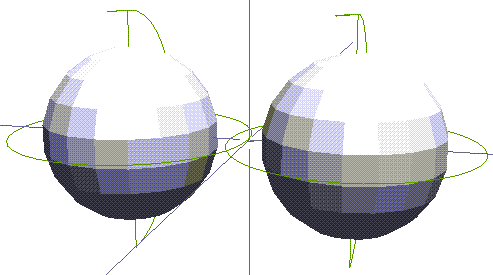
Figure 2.40 Turn on shading for both spheres
4. In the Attributes Editor, load the following material file:
/usr/local/ngc/presets/materials/brick-red
- The icon for the brick-red material should appear in the Select Material section of the menu.
5. (CLICK-L) on the Render domain button.
6. (CLICK-L) on New to create a new material.
- Name your new material "brick-red-2", then (CLICK-L) on Do It.
7. (CLICK-L) on the Inheriting field in the Hierarchy operations section of the Attributes Editor.
- A list of materials currently loaded into memory appears.
8. (CLICK-L) on brick-red.
- Note that when inheritance is first established between two materials, local attributes for the source material show up as inherited attributes for the inheriting material. Of course, you can still change attributes in the source or inheriting material other than these attributes.
- Note also that in the Current Material section, the source material from which this material inherits is displayed:
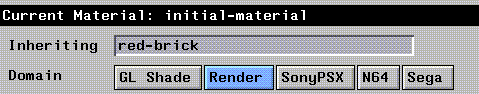
Figure 2.41 If a material inherits from another, that material is displayed
9. Repeat steps 4 through 8, but this time name the material brick-red-3.
- We now have three materials, two of which inherit attribute values from the third, as shown in Figure 2.42.
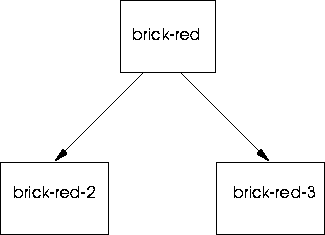
Figure 2.42 The material hierarchy for the brick-red materials
10. (CLICK-L) on brick-red-2's icon to make it the current material.
- We'll modify this material slightly to demonstrate the difference between local attribute values and inherited attribute values.
11. (CLICK-L) on Bump in the Material Parameters section of the Attributes Editor.
12. Change the bump depth values to 5.0 and 5.0.
13. (CLICK-L) on brick-red-3's icon to make it the current material.
14. (CLICK-L) on the Shader icon, then adjust the Visibility attribute to a value around .5.
- You can adjust other attributes as well if you wish. The point is to demonstrate how changes made locally to attribute values are independent of and complement changes we'll make later to the material from which brick-red-2 and brick-red-3 inherit values.
15. Using the browser, assign brick-red-2 to one of your spheres, and brick-red-3 to the other.
- If you need to review the procedure for assigning materials to objects, see the section "Assigning a Material to an Object," on page 2-5.
16. (CLICK-L) on the Render button in the Attributes Editor to render the scene.
- When the render is completed, you should see two similar yet distinct brick spheres in the render window.
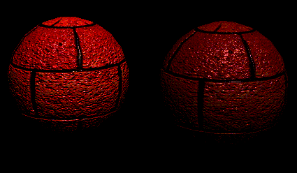
Figure 2.43 Rendered spheres; left, with heightened bump map, right, with reduced visibility
17. In the Attributes Editor, (CLICK-L) on brick-red's icon to make it the current material.
18. (CLICK-L) on the Texture in the Material Parameters section of the Attributes Editor.
19. Adjust the UV Scale values to 5.0 and 5.0.
- This adjusts the scale of the texture map along both its U and V coordinates; modifying the UV scale for a map changes the apparent "size" of the map. A higher value causes the features to repeat more times over the projected area.
20. (CLICK-L) on Bump icon in the Material Parameters section of the Attributes Editor.
21. Adjust the UV Scale values to 5.0 and 5.0.
- If you change the UV scale of your texture map without making a like adjustment to your bump map, the scale of the two maps will be out of alignment.
22. Render the scene again.
- This render illustrates how attributes are inherited; changes in brick-red-2 or brick-red-3 that are local override the attributes in the set they inherit from (brick-red). Changes made to the source material affect any set that inherits from it, as long as there are no local overrides in that material.
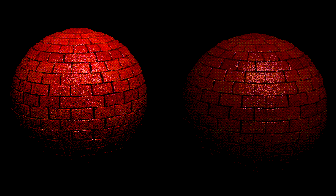
Figure 2.44 Rendered spheres, with local attributes still in place, but inherited UV Scale
- Note. If you modify an attribute in your base material (making that attribute local), then make a copy of the material, that copy will also show the modified attribute as local. If you set up inheritance between the copy and the original, the copied attribute will not inherit (since N-Render thinks the value is local). Inheriting sets should have attribute values that are default before setting up inheritance.
Using the Browser to Define Inheritance
Inheritance can be defined between materials in the browser using a simple drag and drop technique. To make one material inherit from another using the Browser:
1. Open the Browser.
2. (CLICK-L) on the Materials button.
- The hierarchy of currently loaded materials is displayed, as shown in Figure 2.45:
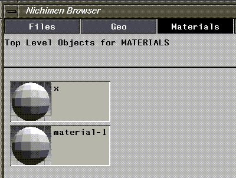
Figure 2.45 Current material hierarchy-material-1 and x are at the same level (no inheritance)
3. (DRAG-M) on the set that should inherit from another set.
- A red outline of the material name follows the mouse.
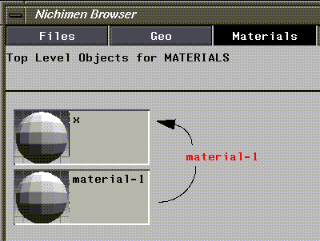
Figure 2.46 The name of the material follows the mouse
4. Move the outlined name over the set to inherit from.
- The resulting structure shows how materials inherit:
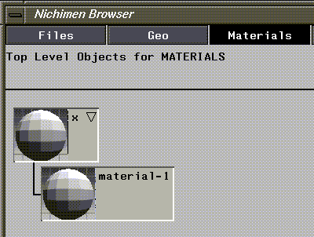
Figure 2.47 Resulting hierarchy-material-1 now inherits from x
[N-World Contents] [Book Contents] [Prev] [Next] [Index]
 Another fine product from Nichimen documentation!
Another fine product from Nichimen documentation!
Copyright © 1996, Nichimen Graphics Corporation. All rights
reserved.